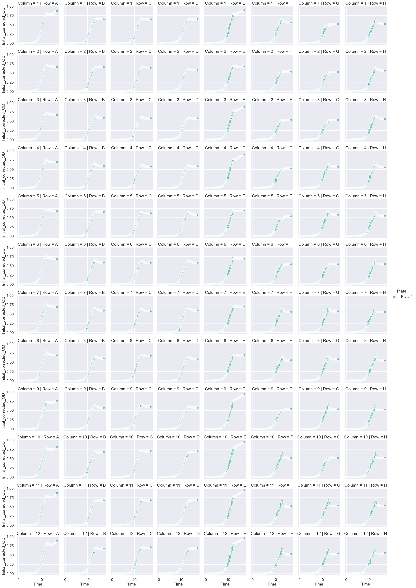
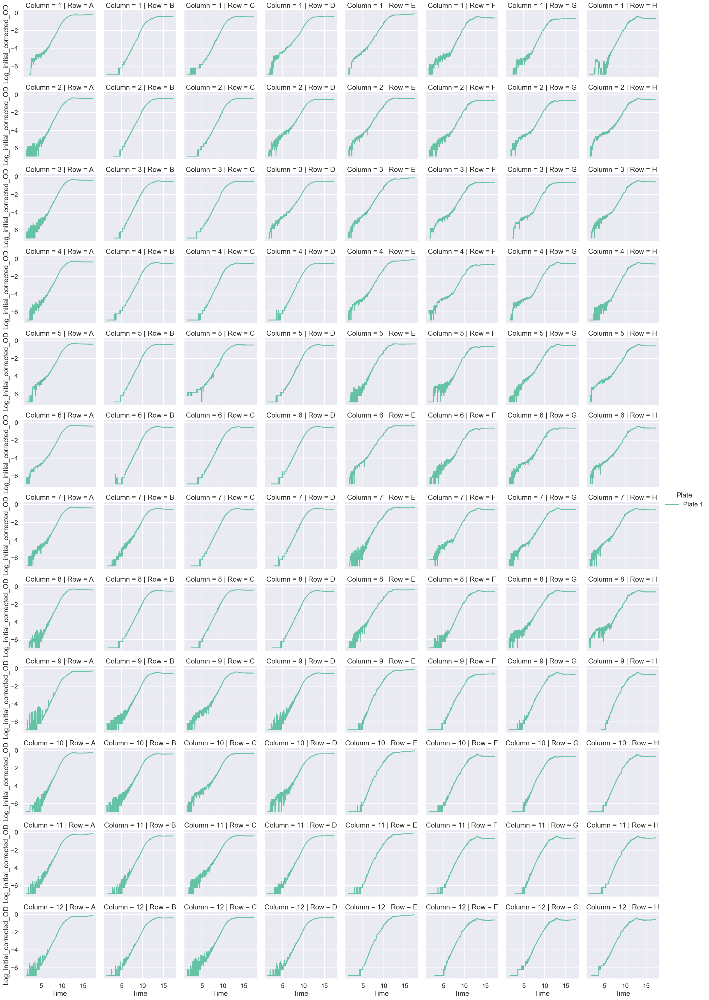
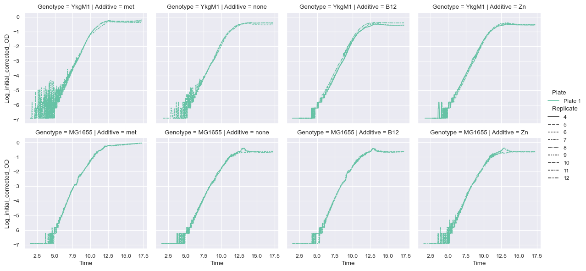
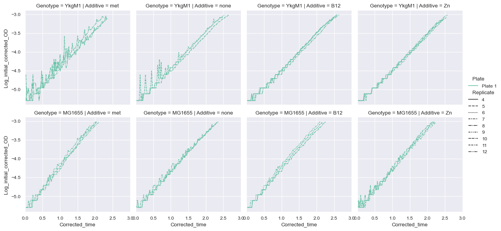
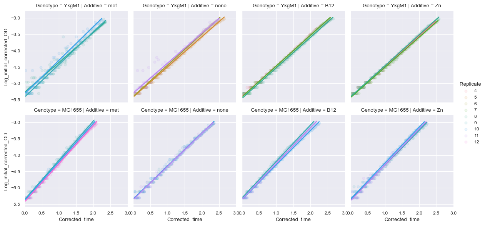
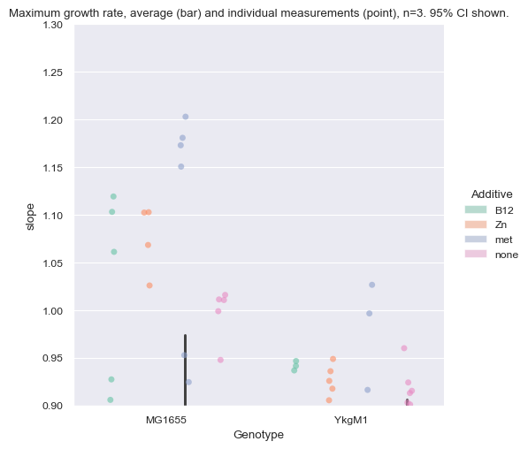
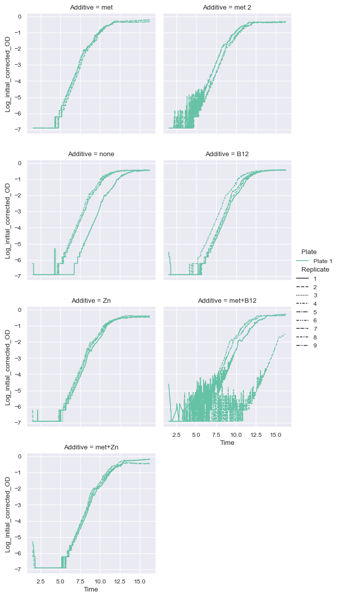

[1]:
import pandas as pd
import numpy as np
import matplotlib.pyplot as plt
import seaborn as sns
import polars as pl
import itertools
import warnings
import pandas as pd
import statsmodels.api as sm
def regress(data, yvar, xvars):
Y = data[yvar]
X = data[xvars]
X['intercept'] = 1.
result = sm.OLS(Y, X).fit()
return result.params
def regress_error(data, yvar, xvars):
Y = data[yvar]
X = data[xvars]
X['intercept'] = 1.
result = sm.OLS(Y, X).fit()
output = list(result.params)
output.extend(list(result.bse))
return pd.Series(output, ["slope", "intercept", "slope_e", "intercept_e"])
sns.set(style="darkgrid", palette="Set2")
Importing multiple plates with different layouts
[3]:
files = [
["growth_data/cyrus_blue_020824.txt",
{"A": "met", "B": "none", "C": "B12", "D": "Zn","E": "met", "F": "none", "G": "Zn", "H": "B12"},
[["1", "2", "3", "4", "5", "6", "7", "8", "9", "10", "11", "12"]],
[["A", "B", "C", "D"], ["E", "F", "G", "H"]],
{"YkgM1": [0, 0], "MG1655": [1, 0]},
12],
# good?
# ["growth_data/cyrus_pink_020924.txt",
# {"A": "met", "B": "none", "C": "B12", "D": "Zn","E": "met+B12", "F": "met+Zn", "G": "met+B12+Zn", "H": "blank"},
# [["1", "2", "3", "4", "5", "6", "7", "8", "9", "10", "11", "12"]],
# [["A", "B", "C", "D", "E", "F", "G"]],
# {"MG1655": [0, 0]},
# 12],
# ["growth_data/cyrus_blue_021324.txt",
# {"A": "met", "B": "none", "C": "B12", "D": "Zn","E": "met+B12", "F": "met+Zn", "G": "met+B12+Zn", "H": "blank"},
# [["1", "2", "3", "4", "5", "6", "7", "8", "9", "10", "11", "12"]],
# [["A", "B", "C", "D", "E", "F", "G"]],
# {"MG1655": [0, 0]},
# 12],
# ["growth_data/cyrus_blue_021424.txt",
# {"A": "met", "B": "none", "C": "B12", "D": "Zn","E": "met+B12", "F": "met+Zn", "G": "met+B12+Zn", "H": "blank"},
# [["1", "2", "3", "4", "5", "6", "7", "8", "9", "10", "11", "12"]],
# [["A", "B", "C", "D", "E", "F", "G"]],
# {"MG1655": [0, 0]},
# 12],
# ["growth_data/cyrus_blue_021524.txt",
# {"A": "met", "B": "met 2", "C": "none", "D": "B12", "E": "Zn","F": "met+B12", "G": "met+Zn", "H": "met+B12+Zn"},
# [["1", "2", "3", "4", "5", "6", "7", "8", "9", "10", "11", "12"]],
# [["A", "B", "C", "D", "E", "F", "G"]],
# {"MG1655": [0, 0]},
# 12],
# ["growth_data/cyrus_031524_paraquat_Mn.txt",
# {"A": "Mn 0", "B": "Mn 1", "C": "Mn 2", "D": "Mn 3", "E": "Mn 4","F": "Mn 5", "G": "Mn 6", "H": "Mn 7"},
# [["1", "2", "3", "4", "5", "6",], [ "7", "8", "9", "10", "11", "12"]],
# [["A", "B", "C", "D", "E", "F", "G", "H"]],
# {"MG1655 + PQ": [0, 0], "MG1655 - PQ": [0, 1]},
# 12],
# ["growth_data/cyrus_031524_paraquat_Mn_part2.txt",
# {"A": "Mn 0", "B": "Mn 1", "C": "Mn 2", "D": "Mn 3", "E": "Mn 4","F": "Mn 5", "G": "Mn 6", "H": "Mn 7"},
# [["1", "2", "3", "4", "5", "6",], [ "7", "8", "9", "10", "11", "12"]],
# [["A", "B", "C", "D", "E", "F", "G", "H"]],
# {"MG1655 + PQ": [0, 0], "MG1655 - PQ": [0, 1]},
# 12],
# ["growth_data/cyrus_032024_paraquat_Mn.txt",
# {"A": "0 nM Mn", "B": "10^0 nM Mn", "C": "10^1 nM Mn", "D": "10^2 nM Mn",
# "E": "10^3 nM Mn","F": "10^4 nM Mn", "G": "10^5 nM Mn", "H": "10^6 nM Mn"},
# [["1", "2", "3", "4", "5", "6",], [ "7", "8", "9", "10", "11", "12"]],
# [["A", "B", "C", "D", "E", "F", "G", "H"]],
# {"MG1655 + PQ": [0, 0], "MG1655 - PQ": [0, 1]},
# 12],
]
for i, file in enumerate(files):
fname = file[0]
additive = file[1]
genotype_col = file[2]
genotype_row = file[3]
genotype_combinations = file[4]
n_replicate = file[5]
al = pl.DataFrame(additive).transpose(include_header=True)
al = al.rename({"column": "Row", "column_0": "Additive"})
al = al.with_columns(Plate = pl.lit(f"Plate {i+1}"))
gl = []
for genotype, idx in genotype_combinations.items():
gl.extend([[genotype, x+y] for x in genotype_row[idx[0]] for y in genotype_col[idx[1]]])
gl = pl.DataFrame(gl).transpose()
gl = gl.rename({"column_0": "Genotype", "column_1": "Well"})
gl = gl.with_columns(Plate = pl.lit(f"Plate {i+1}"))
if i == 0:
df = pl.read_csv(fname, separator="\t") # growth_data/cyrus_mutant_013124.txt
df = df.with_columns(Plate = pl.lit("Plate 1"))
df = df.with_columns(N_replicate = n_replicate)
df = df.drop('T600')
gdf = gl
adf = al
else:
df_add = pl.read_csv(fname, separator="\t")
df_add = df_add.with_columns(Plate = pl.lit(f"Plate {i+1}"))
df_add = df_add.with_columns(N_replicate = n_replicate)
df_add = df_add.drop('T600')
df = pl.concat([df, df_add])
gdf = pl.concat([gdf, gl])
adf = pl.concat([adf, al])
# time conversion
df = df.with_columns(pl.col("Time").str.to_time("%H:%M:%S"))
df = df.with_columns(df['Time'].dt.hour().cast(pl.Int64) + df['Time'].dt.minute().cast(pl.Int64) / 60 + df['Time'].dt.second() / 3600)
# get minimum OD measured, used to be 1.5
init_df = df.filter(pl.col("Time") > 1.5).sort(by="Time").drop(["Time"]).melt(id_vars=["Plate"], variable_name="Well", value_name="Initial_OD")
init_df = init_df.group_by(["Plate", "Well"]).min()
init_df_median = df.filter(pl.col("Time") < 5).sort(by="Time").drop(["Time"]).melt(id_vars=["Plate"], variable_name="Well", value_name="Initial_OD_median")
init_df_median = init_df_median.group_by(["Plate", "Well"]).median()
init_df
# blank_df.head(3)
df.head(3)
[3]:
shape: (3, 99)
| Time | A1 | A2 | A3 | A4 | A5 | A6 | A7 | A8 | A9 | A10 | A11 | A12 | B1 | B2 | B3 | B4 | B5 | B6 | B7 | B8 | B9 | B10 | B11 | B12 | C1 | C2 | C3 | C4 | C5 | C6 | C7 | C8 | C9 | C10 | C11 | C12 | … | F2 | F3 | F4 | F5 | F6 | F7 | F8 | F9 | F10 | F11 | F12 | G1 | G2 | G3 | G4 | G5 | G6 | G7 | G8 | G9 | G10 | G11 | G12 | H1 | H2 | H3 | H4 | H5 | H6 | H7 | H8 | H9 | H10 | H11 | H12 | Plate | N_replicate |
|---|---|---|---|---|---|---|---|---|---|---|---|---|---|---|---|---|---|---|---|---|---|---|---|---|---|---|---|---|---|---|---|---|---|---|---|---|---|---|---|---|---|---|---|---|---|---|---|---|---|---|---|---|---|---|---|---|---|---|---|---|---|---|---|---|---|---|---|---|---|---|---|---|---|---|
| f64 | f64 | f64 | f64 | f64 | f64 | f64 | f64 | f64 | f64 | f64 | f64 | f64 | f64 | f64 | f64 | f64 | f64 | f64 | f64 | f64 | f64 | f64 | f64 | f64 | f64 | f64 | f64 | f64 | f64 | f64 | f64 | f64 | f64 | f64 | f64 | f64 | … | f64 | f64 | f64 | f64 | f64 | f64 | f64 | f64 | f64 | f64 | f64 | f64 | f64 | f64 | f64 | f64 | f64 | f64 | f64 | f64 | f64 | f64 | f64 | f64 | f64 | f64 | f64 | f64 | f64 | f64 | f64 | f64 | f64 | f64 | f64 | str | i32 |
| 0.011111 | 0.096 | 0.094 | 0.096 | 0.095 | 0.096 | 0.097 | 0.102 | 0.094 | 0.093 | 0.095 | 0.094 | 0.095 | 0.091 | 0.091 | 0.092 | 0.09 | 0.092 | 0.092 | 0.091 | 0.09 | 0.091 | 0.092 | 0.09 | 0.09 | 0.095 | 0.093 | 0.095 | 0.093 | 0.104 | 0.094 | 0.093 | 0.093 | 0.096 | 0.092 | 0.097 | 0.095 | … | 0.092 | 0.095 | 0.093 | 0.093 | 0.093 | 0.092 | 0.092 | 0.091 | 0.091 | 0.096 | 0.09 | 0.095 | 0.097 | 0.095 | 0.094 | 0.098 | 0.093 | 0.095 | 0.099 | 0.094 | 0.093 | 0.094 | 0.095 | 0.095 | 0.096 | 0.095 | 0.094 | 0.093 | 0.093 | 0.092 | 0.093 | 0.096 | 0.092 | 0.11 | 0.09 | "Plate 1" | 12 |
| 0.036111 | 0.096 | 0.094 | 0.096 | 0.095 | 0.096 | 0.097 | 0.102 | 0.094 | 0.094 | 0.095 | 0.094 | 0.095 | 0.091 | 0.091 | 0.091 | 0.09 | 0.091 | 0.091 | 0.091 | 0.09 | 0.091 | 0.092 | 0.09 | 0.09 | 0.095 | 0.093 | 0.094 | 0.093 | 0.104 | 0.094 | 0.093 | 0.092 | 0.096 | 0.092 | 0.097 | 0.094 | … | 0.092 | 0.095 | 0.093 | 0.092 | 0.092 | 0.091 | 0.092 | 0.09 | 0.091 | 0.096 | 0.09 | 0.096 | 0.097 | 0.095 | 0.093 | 0.097 | 0.092 | 0.095 | 0.099 | 0.094 | 0.093 | 0.094 | 0.094 | 0.095 | 0.096 | 0.095 | 0.094 | 0.093 | 0.093 | 0.092 | 0.093 | 0.095 | 0.092 | 0.11 | 0.09 | "Plate 1" | 12 |
| 0.061111 | 0.096 | 0.094 | 0.096 | 0.095 | 0.096 | 0.097 | 0.102 | 0.094 | 0.094 | 0.095 | 0.094 | 0.095 | 0.091 | 0.091 | 0.092 | 0.09 | 0.091 | 0.092 | 0.091 | 0.09 | 0.091 | 0.092 | 0.09 | 0.09 | 0.095 | 0.093 | 0.095 | 0.093 | 0.105 | 0.094 | 0.092 | 0.092 | 0.096 | 0.092 | 0.097 | 0.094 | … | 0.092 | 0.095 | 0.093 | 0.092 | 0.093 | 0.092 | 0.092 | 0.09 | 0.091 | 0.093 | 0.09 | 0.096 | 0.097 | 0.095 | 0.093 | 0.095 | 0.092 | 0.095 | 0.099 | 0.094 | 0.093 | 0.094 | 0.094 | 0.095 | 0.096 | 0.095 | 0.094 | 0.093 | 0.093 | 0.093 | 0.093 | 0.095 | 0.093 | 0.111 | 0.09 | "Plate 1" | 12 |
[4]:
# melt to experiments
mdf = df.melt(id_vars=["Time", "Plate", "N_replicate"], variable_name="Well", value_name="OD")
mdf = mdf.with_columns((mdf["Well"].str.slice(0,1)).alias("Row"))
mdf = mdf.with_columns((mdf["Well"].str.slice(1)).alias("Column"))
mdf = mdf.join(adf, on=["Plate", "Row"])
mdf = mdf.join(gdf, on=["Plate", "Well"])
mdf = mdf.join(init_df, on=["Well", "Plate"])
mdf = mdf.join(init_df_median, on=["Well", "Plate"])
mdf = mdf.with_columns( ((pl.col("Column").cast(pl.Int32) + pl.col("N_replicate") - 1) % pl.col("N_replicate") + 1).alias("Replicate"))
# mdf = mdf.with_columns(((pl.col("Column").cast(pl.Int32)+3) % 4 + 1).alias("Replicate"))
# mdf = mdf.with_columns(((pl.col("Column").cast(pl.Int32)+11) % 12 + 1).alias("Replicate"))
# mdf.group_by(["Plate","Additive","Genotype"]).size()
mdf
[4]:
shape: (66_336, 12)
| Time | Plate | N_replicate | Well | OD | Row | Column | Additive | Genotype | Initial_OD | Initial_OD_median | Replicate |
|---|---|---|---|---|---|---|---|---|---|---|---|
| f64 | str | i32 | str | f64 | str | str | str | str | f64 | f64 | i32 |
| 0.011111 | "Plate 1" | 12 | "A1" | 0.096 | "A" | "1" | "met" | "YkgM1" | 0.096 | 0.097 | 1 |
| 0.036111 | "Plate 1" | 12 | "A1" | 0.096 | "A" | "1" | "met" | "YkgM1" | 0.096 | 0.097 | 1 |
| 0.061111 | "Plate 1" | 12 | "A1" | 0.096 | "A" | "1" | "met" | "YkgM1" | 0.096 | 0.097 | 1 |
| 0.086111 | "Plate 1" | 12 | "A1" | 0.096 | "A" | "1" | "met" | "YkgM1" | 0.096 | 0.097 | 1 |
| 0.111111 | "Plate 1" | 12 | "A1" | 0.096 | "A" | "1" | "met" | "YkgM1" | 0.096 | 0.097 | 1 |
| 0.136111 | "Plate 1" | 12 | "A1" | 0.096 | "A" | "1" | "met" | "YkgM1" | 0.096 | 0.097 | 1 |
| 0.161111 | "Plate 1" | 12 | "A1" | 0.096 | "A" | "1" | "met" | "YkgM1" | 0.096 | 0.097 | 1 |
| 0.186111 | "Plate 1" | 12 | "A1" | 0.096 | "A" | "1" | "met" | "YkgM1" | 0.096 | 0.097 | 1 |
| 0.211111 | "Plate 1" | 12 | "A1" | 0.096 | "A" | "1" | "met" | "YkgM1" | 0.096 | 0.097 | 1 |
| 0.236111 | "Plate 1" | 12 | "A1" | 0.096 | "A" | "1" | "met" | "YkgM1" | 0.096 | 0.097 | 1 |
| 0.261111 | "Plate 1" | 12 | "A1" | 0.096 | "A" | "1" | "met" | "YkgM1" | 0.096 | 0.097 | 1 |
| 0.286111 | "Plate 1" | 12 | "A1" | 0.096 | "A" | "1" | "met" | "YkgM1" | 0.096 | 0.097 | 1 |
| … | … | … | … | … | … | … | … | … | … | … | … |
| 16.986111 | "Plate 1" | 12 | "H12" | 0.646 | "H" | "12" | "B12" | "MG1655" | 0.089 | 0.09 | 12 |
| 17.011111 | "Plate 1" | 12 | "H12" | 0.647 | "H" | "12" | "B12" | "MG1655" | 0.089 | 0.09 | 12 |
| 17.036111 | "Plate 1" | 12 | "H12" | 0.647 | "H" | "12" | "B12" | "MG1655" | 0.089 | 0.09 | 12 |
| 17.061111 | "Plate 1" | 12 | "H12" | 0.648 | "H" | "12" | "B12" | "MG1655" | 0.089 | 0.09 | 12 |
| 17.086111 | "Plate 1" | 12 | "H12" | 0.647 | "H" | "12" | "B12" | "MG1655" | 0.089 | 0.09 | 12 |
| 17.111111 | "Plate 1" | 12 | "H12" | 0.649 | "H" | "12" | "B12" | "MG1655" | 0.089 | 0.09 | 12 |
| 17.136111 | "Plate 1" | 12 | "H12" | 0.649 | "H" | "12" | "B12" | "MG1655" | 0.089 | 0.09 | 12 |
| 17.161111 | "Plate 1" | 12 | "H12" | 0.65 | "H" | "12" | "B12" | "MG1655" | 0.089 | 0.09 | 12 |
| 17.186111 | "Plate 1" | 12 | "H12" | 0.652 | "H" | "12" | "B12" | "MG1655" | 0.089 | 0.09 | 12 |
| 17.211111 | "Plate 1" | 12 | "H12" | 0.652 | "H" | "12" | "B12" | "MG1655" | 0.089 | 0.09 | 12 |
| 17.236111 | "Plate 1" | 12 | "H12" | 0.654 | "H" | "12" | "B12" | "MG1655" | 0.089 | 0.09 | 12 |
| 17.261111 | "Plate 1" | 12 | "H12" | 0.653 | "H" | "12" | "B12" | "MG1655" | 0.089 | 0.09 | 12 |
[5]:
mdf = mdf.with_columns([
(pl.col("OD") - pl.col("Initial_OD")).alias("Initial_corrected_OD"),
])
mdf = mdf.with_columns([
(pl.col("OD") - pl.col("Initial_OD_median")).alias("Initial_median_corrected_OD"),
])
mdf.head(5)
[5]:
shape: (5, 14)
| Time | Plate | N_replicate | Well | OD | Row | Column | Additive | Genotype | Initial_OD | Initial_OD_median | Replicate | Initial_corrected_OD | Initial_median_corrected_OD |
|---|---|---|---|---|---|---|---|---|---|---|---|---|---|
| f64 | str | i32 | str | f64 | str | str | str | str | f64 | f64 | i32 | f64 | f64 |
| 0.011111 | "Plate 1" | 12 | "A1" | 0.096 | "A" | "1" | "met" | "YkgM1" | 0.096 | 0.097 | 1 | 0.0 | -0.001 |
| 0.036111 | "Plate 1" | 12 | "A1" | 0.096 | "A" | "1" | "met" | "YkgM1" | 0.096 | 0.097 | 1 | 0.0 | -0.001 |
| 0.061111 | "Plate 1" | 12 | "A1" | 0.096 | "A" | "1" | "met" | "YkgM1" | 0.096 | 0.097 | 1 | 0.0 | -0.001 |
| 0.086111 | "Plate 1" | 12 | "A1" | 0.096 | "A" | "1" | "met" | "YkgM1" | 0.096 | 0.097 | 1 | 0.0 | -0.001 |
| 0.111111 | "Plate 1" | 12 | "A1" | 0.096 | "A" | "1" | "met" | "YkgM1" | 0.096 | 0.097 | 1 | 0.0 | -0.001 |
[6]:
sns.set_context("talk")
sns.relplot(x="Time", y="Initial_corrected_OD", hue="Plate", col="Row", row="Column", \
# row="Genotype",
height=3, \
# col_wrap=4,
data=mdf)
[6]:
<seaborn.axisgrid.FacetGrid at 0x294de98a0>

[7]:
f_mdf = mdf.filter(pl.col("Time") > 1.5).filter(pl.col("Initial_corrected_OD") > 0)
f_mdf = f_mdf.with_columns([
((pl.col("Initial_corrected_OD")).log())
.alias("Log_initial_corrected_OD")
])
f_mdf = f_mdf.drop_nulls()
[8]:
with warnings.catch_warnings():
warnings.simplefilter('ignore')
sns.relplot(x="Time", y="Log_initial_corrected_OD", hue="Plate", kind="line", row="Column", col="Row", height=3, \
data=f_mdf.filter(pl.col("Time") < 20))
# plt.savefig("weird_plate.png")

[67]:
gr_df = f_mdf.filter( (pl.col("Time") < 20))
minimum_start_times = gr_df.filter(pl.col("Log_initial_corrected_OD") <= -5.5).group_by(["Plate", "Well"]).agg(pl.max("Time").alias("Time_exp_start")).sort("Time_exp_start")
minimum_end_times = gr_df.filter(pl.col("Log_initial_corrected_OD") >= -3).group_by(["Plate", "Well"]).agg(pl.min("Time").alias("Time_exp_end")).sort("Time_exp_end")
gr_df = gr_df.join(minimum_start_times, on=["Plate", "Well"])
gr_df = gr_df.join(minimum_end_times, on=["Plate", "Well"])
gr_df = gr_df.filter((pl.col("Time") > pl.col("Time_exp_start")) & (pl.col("Time") < pl.col("Time_exp_end")))
gr_df = gr_df.with_columns((pl.col("Time") - pl.col("Time_exp_start")).alias("Corrected_time"))
gr_df.head(5)
# regress and pick top x
predicted_gr = gr_df \
.to_pandas().groupby(['Genotype', 'Additive','Replicate', 'Plate']).apply(regress_error, 'Log_initial_corrected_OD', ['Corrected_time']).reset_index()
M = 0
N = 3
top_gr = pl.DataFrame(predicted_gr.sort_values(by=["Genotype", "Additive", "Plate", "slope"], ascending=False).groupby(['Genotype', 'Additive', 'Plate']).nth[M:N])
top_gr.head(7)
gr_df = gr_df.join(top_gr, on=["Additive", "Plate", "Replicate", "Genotype"])
/var/folders/dx/0239zgvj0tgf46b5h8l7v_fc0000gn/T/ipykernel_89280/2521229149.py:13: DeprecationWarning: DataFrameGroupBy.apply operated on the grouping columns. This behavior is deprecated, and in a future version of pandas the grouping columns will be excluded from the operation. Either pass `include_groups=False` to exclude the groupings or explicitly select the grouping columns after groupby to silence this warning.
.to_pandas().groupby(['Genotype', 'Additive','Replicate', 'Plate']).apply(regress_error, 'Log_initial_corrected_OD', ['Corrected_time']).reset_index()
[68]:
with warnings.catch_warnings():
warnings.simplefilter('ignore')
sns.relplot(x="Time", y="Log_initial_corrected_OD", hue="Plate", kind="line", row="Genotype", col="Additive", style="Replicate", height=3, \
data=f_mdf.join(top_gr, on=["Additive", "Plate", "Replicate", "Genotype"]))
# plt.savefig("weird_plate.png")

[69]:
with warnings.catch_warnings():
warnings.simplefilter('ignore')
sns.set_context("paper")
sns.relplot(x="Corrected_time", y="Log_initial_corrected_OD", hue="Plate", kind="line", col="Additive", style="Replicate",
# col_wrap=4,
row="Genotype",
height=3, \
data=gr_df)
plt.xlim([0,3])
# plt.savefig("plates.png")

[70]:
sns.lmplot(x="Corrected_time", y="Log_initial_corrected_OD", hue="Replicate", col="Additive",
# col_wrap=4, \
row="Genotype",
height=3,
data=gr_df.to_pandas(), scatter_kws = {"alpha": 0.1})
plt.xlim([0,3])
[70]:
(0.0, 3.0)

[63]:
# sns.relplot(x="Time", y="Log_initial_corrected_OD", kind="line", row="Replicate", col="Additive", height=3, \
# data=f_mdf.filter(pl.col("Time") < 15))
[64]:
# sns.set_context("paper")
# sns.relplot(x="Time", y="Initial_corrected_OD", hue="Plate", style="Replicate", kind="scatter", col="Additive", \
# # row="Genotype", height=3, \
# col_wrap=4,
# data=mdf)
[65]:
predicted_gr = gr_df \
.to_pandas().groupby(['Genotype', 'Additive','Replicate', 'Plate']).apply(regress_error, 'Log_initial_corrected_OD', ['Corrected_time'])
predicted_gr["doubling_time"] = np.log(2) / predicted_gr["slope"]
predicted_gr = predicted_gr.reset_index()
gr_mean_std = predicted_gr.groupby(['Genotype', 'Additive']).agg({'slope':['mean','std']})
gr_mean_std.columns = gr_mean_std.columns.get_level_values(1)
gr_mean_std["doubling_time"] = np.log(2)/gr_mean_std["mean"]
# gr_mean_std = gr_mean_std.reset_index()
predicted_gr["doubling_time"] = np.log(2)/predicted_gr["slope"]
predicted_gr
/var/folders/dx/0239zgvj0tgf46b5h8l7v_fc0000gn/T/ipykernel_89280/544480332.py:2: DeprecationWarning: DataFrameGroupBy.apply operated on the grouping columns. This behavior is deprecated, and in a future version of pandas the grouping columns will be excluded from the operation. Either pass `include_groups=False` to exclude the groupings or explicitly select the grouping columns after groupby to silence this warning.
.to_pandas().groupby(['Genotype', 'Additive','Replicate', 'Plate']).apply(regress_error, 'Log_initial_corrected_OD', ['Corrected_time'])
[65]:
| Genotype | Additive | Replicate | Plate | slope | intercept | slope_e | intercept_e | doubling_time | |
|---|---|---|---|---|---|---|---|---|---|
| 0 | MG1655 | B12 | 9 | Plate 1 | 1.118869 | -5.313048 | 0.007333 | 0.008970 | 0.619507 |
| 1 | MG1655 | B12 | 10 | Plate 1 | 1.060833 | -5.362261 | 0.005396 | 0.007068 | 0.653399 |
| 2 | MG1655 | B12 | 11 | Plate 1 | 1.102755 | -5.360212 | 0.006421 | 0.008133 | 0.628560 |
| 3 | MG1655 | B12 | 12 | Plate 1 | 0.927136 | -5.498925 | 0.006584 | 0.010144 | 0.747622 |
| 4 | MG1655 | Zn | 9 | Plate 1 | 1.068039 | -5.374192 | 0.010509 | 0.013613 | 0.648991 |
| 5 | MG1655 | Zn | 10 | Plate 1 | 1.102385 | -5.346272 | 0.009394 | 0.011763 | 0.628771 |
| 6 | MG1655 | Zn | 11 | Plate 1 | 1.102021 | -5.400372 | 0.010958 | 0.014036 | 0.628978 |
| 7 | MG1655 | Zn | 12 | Plate 1 | 1.025598 | -5.380610 | 0.009018 | 0.011943 | 0.675847 |
| 8 | MG1655 | met | 9 | Plate 1 | 1.202491 | -5.360460 | 0.010636 | 0.012550 | 0.576426 |
| 9 | MG1655 | met | 10 | Plate 1 | 1.180368 | -5.386435 | 0.008078 | 0.009648 | 0.587230 |
| 10 | MG1655 | met | 11 | Plate 1 | 1.150198 | -5.367736 | 0.009646 | 0.011799 | 0.602633 |
| 11 | MG1655 | met | 12 | Plate 1 | 1.172544 | -5.434108 | 0.007222 | 0.008835 | 0.591148 |
| 12 | MG1655 | none | 9 | Plate 1 | 1.010952 | -5.345920 | 0.007981 | 0.010914 | 0.685638 |
| 13 | MG1655 | none | 10 | Plate 1 | 1.010328 | -5.343933 | 0.009572 | 0.013090 | 0.686062 |
| 14 | MG1655 | none | 11 | Plate 1 | 1.015693 | -5.359653 | 0.007328 | 0.009916 | 0.682438 |
| 15 | MG1655 | none | 12 | Plate 1 | 0.998641 | -5.380497 | 0.005721 | 0.007907 | 0.694091 |
| 16 | YkgM1 | B12 | 4 | Plate 1 | 0.941245 | -5.403842 | 0.005265 | 0.007885 | 0.736415 |
| 17 | YkgM1 | B12 | 6 | Plate 1 | 0.889570 | -5.438741 | 0.005648 | 0.008540 | 0.779193 |
| 18 | YkgM1 | B12 | 7 | Plate 1 | 0.946423 | -5.415109 | 0.004436 | 0.006643 | 0.732387 |
| 19 | YkgM1 | B12 | 8 | Plate 1 | 0.936539 | -5.462900 | 0.004984 | 0.007680 | 0.740115 |
| 20 | YkgM1 | Zn | 4 | Plate 1 | 0.935714 | -5.418440 | 0.005187 | 0.007469 | 0.740768 |
| 21 | YkgM1 | Zn | 6 | Plate 1 | 0.917416 | -5.456428 | 0.004860 | 0.007418 | 0.755543 |
| 22 | YkgM1 | Zn | 7 | Plate 1 | 0.925583 | -5.437269 | 0.004998 | 0.007412 | 0.748876 |
| 23 | YkgM1 | Zn | 8 | Plate 1 | 0.948549 | -5.410873 | 0.004484 | 0.006715 | 0.730745 |
| 24 | YkgM1 | met | 8 | Plate 1 | 0.916116 | -5.274821 | 0.017955 | 0.024555 | 0.756615 |
| 25 | YkgM1 | met | 9 | Plate 1 | 0.996286 | -5.416959 | 0.014651 | 0.020036 | 0.695731 |
| 26 | YkgM1 | met | 10 | Plate 1 | 1.026269 | -5.318669 | 0.021439 | 0.028082 | 0.675405 |
| 27 | YkgM1 | met | 12 | Plate 1 | 0.883919 | -5.388756 | 0.016601 | 0.024381 | 0.784175 |
| 28 | YkgM1 | none | 3 | Plate 1 | 0.912816 | -5.446658 | 0.004544 | 0.007066 | 0.759350 |
| 29 | YkgM1 | none | 5 | Plate 1 | 0.923914 | -5.418232 | 0.004311 | 0.006643 | 0.750229 |
| 30 | YkgM1 | none | 6 | Plate 1 | 0.959852 | -5.400796 | 0.004282 | 0.006289 | 0.722140 |
| 31 | YkgM1 | none | 11 | Plate 1 | 0.915153 | -5.294350 | 0.017671 | 0.025697 | 0.757412 |
[71]:
with warnings.catch_warnings():
warnings.simplefilter('ignore')
filter_df = pl.DataFrame(predicted_gr) # .filter((pl.col("Genotype") == "MG1655 - PQ"))
filter_df.head(5)
g = sns.catplot(x="Genotype", y="slope", hue="Additive",
data=filter_df.to_pandas(), kind="bar",
height=5, aspect=1, alpha=0.5, errorbar="ci");
g.map_dataframe(sns.stripplot, x="Genotype", y="slope",
hue="Additive", palette="Set2",
alpha=0.6, dodge=True)
plt.title("Maximum growth rate, average (bar) and individual measurements (point), n=3. 95% CI shown.")
plt.ylim([0.9, 1.3])
plt.show()
# g.savefig("story1.png")

[90]:
# with warnings.catch_warnings():
# warnings.simplefilter('ignore')
# filter_df = pl.DataFrame(predicted_gr).filter((pl.col("Genotype") == "MG1655"))
# filter_df.head(5)
# g = sns.catplot(x="Genotype", y="slope", hue="Additive",
# data=filter_df.to_pandas(), kind="bar",
# height=5, aspect=1, alpha=0.5, hue_order=["none", "Zn", "B12", "met"], errorbar="ci");
# g.map_dataframe(sns.stripplot, x="Genotype", y="slope",
# hue="Additive", palette="Set2",
# alpha=0.6, dodge=True, hue_order=["none", "Zn", "B12", "met"])
# plt.title("Minimum doubling time, average (bar) and individual measurements (point), n=3. 95% CI shown.")
# plt.ylim([1, 1.3])
# plt.show()
# # g.savefig("story1.png")
[225]:
sns.lmplot(x="Corrected_time", y="Log_initial_corrected_OD", hue="Additive",
# col_wrap=4, \
# hue_order=["none", "Zn", "B12", "met"],
col="Genotype",
height=5,
data=gr_df.filter((pl.col("Genotype") == "MG1655")).to_pandas(), scatter_kws = {"alpha": 0.1})
plt.xlim([0, 1.5])
---------------------------------------------------------------------------
ValueError Traceback (most recent call last)
Cell In[225], line 1
----> 1 sns.lmplot(x="Corrected_time", y="Log_initial_corrected_OD", hue="Additive",
2 # col_wrap=4, \
3 # hue_order=["none", "Zn", "B12", "met"],
4 col="Genotype",
5 height=5,
6 data=gr_df.filter((pl.col("Genotype") == "MG1655")).to_pandas(), scatter_kws = {"alpha": 0.1})
8 plt.xlim([0, 1.5])
File ~/.pyenv/versions/viv-10/lib/python3.10/site-packages/seaborn/regression.py:598, in lmplot(data, x, y, hue, col, row, palette, col_wrap, height, aspect, markers, sharex, sharey, hue_order, col_order, row_order, legend, legend_out, x_estimator, x_bins, x_ci, scatter, fit_reg, ci, n_boot, units, seed, order, logistic, lowess, robust, logx, x_partial, y_partial, truncate, x_jitter, y_jitter, scatter_kws, line_kws, facet_kws)
595 data = data[cols]
597 # Initialize the grid
--> 598 facets = FacetGrid(
599 data, row=row, col=col, hue=hue,
600 palette=palette,
601 row_order=row_order, col_order=col_order, hue_order=hue_order,
602 height=height, aspect=aspect, col_wrap=col_wrap,
603 **facet_kws,
604 )
606 # Add the markers here as FacetGrid has figured out how many levels of the
607 # hue variable are needed and we don't want to duplicate that process
608 if facets.hue_names is None:
File ~/.pyenv/versions/viv-10/lib/python3.10/site-packages/seaborn/axisgrid.py:456, in FacetGrid.__init__(self, data, row, col, hue, col_wrap, sharex, sharey, height, aspect, palette, row_order, col_order, hue_order, hue_kws, dropna, legend_out, despine, margin_titles, xlim, ylim, subplot_kws, gridspec_kws)
449 if col_wrap is None:
451 kwargs = dict(squeeze=False,
452 sharex=sharex, sharey=sharey,
453 subplot_kw=subplot_kws,
454 gridspec_kw=gridspec_kws)
--> 456 axes = fig.subplots(nrow, ncol, **kwargs)
458 if col is None and row is None:
459 axes_dict = {}
File ~/.pyenv/versions/viv-10/lib/python3.10/site-packages/matplotlib/figure.py:905, in FigureBase.subplots(self, nrows, ncols, sharex, sharey, squeeze, width_ratios, height_ratios, subplot_kw, gridspec_kw)
901 raise ValueError("'width_ratios' must not be defined both as "
902 "parameter and as key in 'gridspec_kw'")
903 gridspec_kw['width_ratios'] = width_ratios
--> 905 gs = self.add_gridspec(nrows, ncols, figure=self, **gridspec_kw)
906 axs = gs.subplots(sharex=sharex, sharey=sharey, squeeze=squeeze,
907 subplot_kw=subplot_kw)
908 return axs
File ~/.pyenv/versions/viv-10/lib/python3.10/site-packages/matplotlib/figure.py:1527, in FigureBase.add_gridspec(self, nrows, ncols, **kwargs)
1488 """
1489 Return a `.GridSpec` that has this figure as a parent. This allows
1490 complex layout of Axes in the figure.
(...)
1523
1524 """
1526 _ = kwargs.pop('figure', None) # pop in case user has added this...
-> 1527 gs = GridSpec(nrows=nrows, ncols=ncols, figure=self, **kwargs)
1528 return gs
File ~/.pyenv/versions/viv-10/lib/python3.10/site-packages/matplotlib/gridspec.py:379, in GridSpec.__init__(self, nrows, ncols, figure, left, bottom, right, top, wspace, hspace, width_ratios, height_ratios)
376 self.hspace = hspace
377 self.figure = figure
--> 379 super().__init__(nrows, ncols,
380 width_ratios=width_ratios,
381 height_ratios=height_ratios)
File ~/.pyenv/versions/viv-10/lib/python3.10/site-packages/matplotlib/gridspec.py:52, in GridSpecBase.__init__(self, nrows, ncols, height_ratios, width_ratios)
49 raise ValueError(
50 f"Number of rows must be a positive integer, not {nrows!r}")
51 if not isinstance(ncols, Integral) or ncols <= 0:
---> 52 raise ValueError(
53 f"Number of columns must be a positive integer, not {ncols!r}")
54 self._nrows, self._ncols = nrows, ncols
55 self.set_height_ratios(height_ratios)
ValueError: Number of columns must be a positive integer, not 0
<Figure size 0x500 with 0 Axes>
[166]:
# sns.lmplot(x="Corrected_time", y="Log_initial_corrected_OD", hue="Additive",
# # col_wrap=4, \
# hue_order=["none", "Zn", "B12", "met"],
# col="Genotype",
# height=5,
# data=gr_df.filter((pl.col("Genotype") == "MG1655")).to_pandas(), scatter_kws = {"alpha": 0.1})
# plt.xlim([0, 1.5])
[167]:
with warnings.catch_warnings():
warnings.simplefilter('ignore')
sns.relplot(x="Time", y="Log_initial_corrected_OD", hue="Plate", kind="line", col="Additive", style="Replicate",
height=3, \
col_wrap=2,
data=f_mdf.join(top_gr, on=["Additive", "Plate", "Replicate", "Genotype"]).filter((pl.col("Genotype") == "MG1655")) )
# plt.savefig("weird_plate.png")

[ ]: